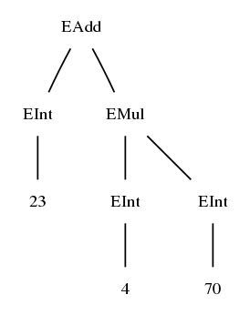

BNF = Backus-Naur Form (also known as Context-Free Grammars).
BNF is the standard format for the specification and documentation of programming languages.
BNFC makes BNF usable for implementation as well.
BNFC is a high-level front end to traditional implementation formats (in the style of Lex and YACC): "BNFC is a compiler compiler compiler"
BNFC saves 90% of source code writing in a typical compiler front end.
BNFC can be used for projects carried out in C, C++, C#, F#, Haskell, Java, OCaml.
Strongest case: when designing and implementing a new programming language
BNFC also scales up to legacy programming languages
BNFC homepage:
digitalgrammars.com/bnfc/
You can obtain
If you are using Debian or Ubuntu Linux, you can obtain BNFC with their package system (but it is a slightly older version).
For the binaries, it is enough to download them and put into a place where you
can find executables (such as /usr/local/bin on Unix-like platforms).
If you choose the source package, you need the
GHC Haskell Compiler. With GHC in place,
just unpack the sources, cd to BNFC, and type make.
If you want to contribute to BNFC (more than 12 persons have!), you can fork the BNFC repository on github.com and submit pull requests.
BNFC is licensed under GPL.
When you have BNFC in place (i.e. on your path), you can call it via
bnfc
This gives you a list of available options. The most common choices are:
bnfc -m -c FILE.cf # to generate C
bnfc -m -cpp_stl FILE.cf # to generate C++ with STL
bnfc -m -java1.5 FILE.cf # to generate Java 1.5
bnfc -m -haskell FILE.cf # to generate Haskell
The -m flag makes BNFC to generate a Makefile. This means
that, after running bnfc, you can create an executable parser by
make
Let us now create our first application from a BNFC source file.
We start with everyone's favourite: the desktop calculator.
To make it the simplest possible, we restrict ourselves to integers, with addition, subtraction, multiplication, and (lossy) division.
The input language is defined with the following BNFC grammar.
EAdd. Exp ::= Exp "+" Exp1 ;
ESub. Exp ::= Exp "-" Exp1 ;
EMul. Exp1 ::= Exp1 "*" Exp2 ;
EDiv. Exp1 ::= Exp1 "/" Exp2 ;
EInt. Exp2 ::= Integer ;
coercions Exp 2 ;
Copy this code into a file called Calc.cf.
We return to the details of the notation after trying this out in BNFC.
If you want to work in Haskell, C, or C++, skip a few sections now.
Assuming you want to work in Java, do the following:
bnfc -m -java1.5 Calc.cf
make
If everything goes fine, this will create a parser test class, which you can try out in the following way:
echo "23 + 4 * 70" | java Calc/Test
Parse Succesful!
[Abstract Syntax]
(EAdd (EInt 23) (EMul (EInt 4) (EInt 70)))
[Linearized Tree]
23 + 4 * 70
However, this will probably not work at first time: you will have to install some more software and set a classpath.
When you called BNFC, you saw it generate lots of files. Most of them were
.java files, but there were two special ones:
Calc/Yylex: lexer specification file in the JLex format
Calc/Calc.cup: parser specification file in the Cup format
You will need to download and install both of the required tools:
It is safest to take the named versions, even if there were newer ones available.
In addition to these, you of course need the Java compiler and runtime environment available from Sun.
Cup comes as a package of java and class files. Just unpack it in some
directory, e.g. /usr/local/java/Cup.
JLex is just one Java file. Put it in some directory,
e.g. /usr/local/java/JLex. Compile it with javac Main.java in that
directory.
After installing Cup and JLex, compiling with
bnfc -m -java1.5 Calc.cf
make
will probably still fail, with a message saying that a class was not found. Fix this by
export CLASSPATH=.:/usr/local/java/Cup:/usr/local/java
provided you put Cup and JLex in places as specified above. Notice also the
inclusion of the current working directory (.).
If export doesn't work: in some Unix shells,
the CLASSPATH variable is set with the command
setenv CLASSPATH .:/usr/local/java/Cup:/usr/local/java
Now you will hopefully be able to compile and run the compiler.
Assuming you want to work in Haskell, do the following:
bnfc -m -haskell Calc.cf
make
If everything goes fine, this will create a parser test executable, which you can try out in the following way:
echo "23 + 4 * 70" | ./TestCalc
Parse Successful!
[Abstract Syntax]
EAdd (EInt 23) (EMul (EInt 4) (EInt 70))
[Linearized tree]
23 + 4 * 70
The tools that you need to have installed are
Assuming you want to work in C or C++, do the following:
bnfc -m -c Calc.cf # in C
bnfc -m -cpp_stl Calc.cf # in C++
make
If everything goes fine, this will create a parser test executable, which you can try out in the following way:
echo "23 + 4 * 70" | ./TestCalc
Parse Successful!
[Abstract Syntax]
EAdd (EInt 23) (EMul (EInt 4) (EInt 70))
[Linearized tree]
23 + 4 * 70
The tools that you need to have installed are
The most common source of problems is wrong version of Bison. If the test
program always results in error: parse error, check the version with
bison --version.
A BNFC source file is a sequence of rules, where most rules have the format
LABEL . VALUE_CATEGORY ::= PRODUCTION ;
The LABEL and VALUE_CATEGORY are identifiers (without quotes).
The PRODUCTION is a sequence of
The rule has the following semantics:
A tree of typeVALUE_CATEGORYcan be built withLABELas the topmost node, from any sequence specified by the production, whose nonterminals give the subtrees of this new tree.
Types of trees are the categories of the grammar. Tree labels are the constructors of those categories.
All categories and constructors should
_), and
These three conditions guarantee that the grammar will work on all platforms.
In the examples above, the string
23 + 4 * 70
was compiled into a tree displayed as follows:
EAdd (EInt 23) (EMul (EInt 4) (EInt 70))
This is just a handy (machine-readable!) notation for the "real" tree

(You may also notice that it is exactly the notation Haskell programmers use for specifying trees.)
How does BNFC know that addition is above multiplication? I.e., why isn't the tree
EMul (EAdd (EInt 23) (EInt 4)) (EInt 70)
This is due to the fact that multiplication expressions are given higher precedence.
The nonterminal Exp has precedence level 0 (actually, we could write
Exp0 to mean the same), Exp1 has precedence level 1, etc.
The rule
EAdd. Exp ::= Exp "+" Exp1 ;
says: EAdd forms an expression of level 0 from an expression of level 0
on the left of + and of level 1 on the right.
Likewise, the rule
EMul. Exp1 ::= Exp1 "*" Exp2 ;
says: EMul form an expression of level 1 from an expression of level 1
on the left of * and of level 2 on the right.
An expression of higher level can always be used on lower levels as well.
2 + 3 is fine: level 2 (EInt) is used on levels 0 and 1, respectively.
An expression of any level can be lifted to the highest level by putting it in parentheses.
(5 + 6) is an expression of level 2.
The rule coercions Exp 2 says that 2 is the highest level for Exp.
All precedence variants of a nonterminal denote the same type.
2, 2 + 2, and 2 * 2 are of the same type, Exp.
This means that a type-correct tree remains type-correct, if a subtree
of category Expi is changed into a subtree of Expj.
BNFC permits a dummy label, which does not construct a new tree but just returns the old one (which must be of same type):
_. Exp2 ::= "(" Exp ")" ;
The rule (coercions Exp 2) is a shorthand for a group of dummy rules:
_. Exp ::= Exp1 ;
_. Exp1 ::= Exp2 ;
_. Exp2 ::= "(" Exp ")" ;
BNFC generates the following components:
The first three belong to a compiler front end, analysing the source code.
The compiler back end can either
The hub of a modern compiler:
In the middle of the front end and back end, there is manipulation of abstract syntax, such as type checking and optimizations.
Abstract syntax representations in programming languages (as generated by BNFC):
This is the most straightforward, so we start from it.
For every type in the grammar, a data definition is produced:
data Exp =
EAdd Exp Exp
| ESub Exp Exp
| EMul Exp Exp
| EDiv Exp Exp
| EInt Integer
deriving (Eq,Ord,Show)
The deriving part says that the type Exp has equality and order
predicates, and its objects can be shown as strings.
The complete code is in the file
AbsCalc.hs.
We write a program that parses an arithmetic expression and returns a numeric value.
Here is the tree traversal: pattern matching on the type Exp.
module Interpreter where
import AbsCalc
interpret :: Exp -> Integer
interpret x = case x of
EAdd exp0 exp -> interpret exp0 + interpret exp
ESub exp0 exp -> interpret exp0 - interpret exp
EMul exp0 exp -> interpret exp0 * interpret exp
EDiv exp0 exp -> interpret exp0 `div` interpret exp
EInt n -> n
The complete code is in the file
Interpreter.hs.
We write a module reading string input calling Interpreter.interpret.
The string is first lexed and parsed. The file
Interpret.hs
is modified from
TestCalc.hs.
module Main where
import LexCalc
import ParCalc
import AbsCalc
import Interpreter
import ErrM
main = do
interact calc
putStrLn ""
calc s =
let Ok e = pExp (myLexer s)
in show (interpret e)
Recursive functions making case analysis on trees is used in almost all components of the compiler.
BNFC gives a template for this, the skeleton file
SkelCalc.hs,
with a dummy tree processing function:
transExp :: Exp -> Result
transExp x = case x of
EAdd exp0 exp -> failure x
ESub exp0 exp -> failure x
EMul exp0 exp -> failure x
EDiv exp0 exp -> failure x
EInt n -> failure x
type Result = Err String
failure :: Show a => a -> Result
failure x = Bad $ "Undefined case: " ++ show x
Compile with GHC:
ghc --make Interpret.hs
Run on command-line input:
echo "1 + 2 * 3" | ./Interpret
7
Run on file input (ex1.calc):
./Interpret < ex1.calc
9102
Now, if you are not working in Java, C, or C++, you can take a long leap.
For each category in the grammar, an abstract base class is generated.
For each constructor of the category, a class extending the base class.
This means quite a few files, put into the subdirectory
Calc/Absyn/:
Calc/Absyn/EAdd.java
Calc/Absyn/EDiv.java
Calc/Absyn/EInt.java
Calc/Absyn/EMul.java
Calc/Absyn/ESub.java
Calc/Absyn/Exp.java
public abstract class Exp implements java.io.Serializable {
// some code that we explain later
}
public class EAdd extends Exp {
public final Exp exp_1, exp_2;
public EAdd(Exp p1, Exp p2) { exp_1 = p1; exp_2 = p2; }
// some more code that we explain later
}
/* the same for ESub, EMul, EDiv */
public class EInt extends Exp {
public final Integer integer_;
public EInt(Integer p1) { integer_ = p1; }
}
For each category in the grammar, a Visitor interface and an abstract accept method are generated.
For each constructor of the category, an accept method overriding the abstract accept.
public abstract class Exp implements java.io.Serializable {
public abstract <R,A> R accept(Exp.Visitor<R,A> v, A arg);
public interface Visitor <R,A> {
public R visit(Calc.Absyn.EAdd p, A arg);
public R visit(Calc.Absyn.ESub p, A arg);
public R visit(Calc.Absyn.EMul p, A arg);
public R visit(Calc.Absyn.EDiv p, A arg);
public R visit(Calc.Absyn.EInt p, A arg);
}
}
public class EAdd extends Exp {
public final Exp exp_1, exp_2;
public EAdd(Exp p1, Exp p2) { exp_1 = p1; exp_2 = p2; }
public <R,A> R accept(Calc.Absyn.Exp.Visitor<R,A> v, A arg)
{
return v.visit(this, arg);
}
interface Exp.Visitor <R,A>: collection of methods for
Exp
R
A
R accept(Exp.Visitor<R,A> v, A arg): a method for using a visitor and
returning a value
Recursive tree traversal:
Exp.Visitor
visit methods
The program uses the visitor skeleton as basis, with Integer as return type
and Object as argument type (a dummy argument):
private static class Calculator implements Exp.Visitor<Integer,Object> {
public Integer visit(Calc.Absyn.EAdd p,Object o)
{
Integer a = p.exp_1.accept(this, null);
Integer b = p.exp_2.accept(this, null);
return a + b;
}
/* correspondingly for ESub, EMul, EDiv */
public Integer visit(Calc.Absyn.EInt p, Object o)
{
return p.integer_;
}
}
The complete code is in the file
Interpreter.java:
package Calc;
import Calc.Absyn.*;
public class Interpreter {
public static Integer interpret(Exp e)
{
Exp exp = (Exp)e ;
return interpretExp(exp, null) ;
}
private static Integer interpretExp(Exp e, Object o)
{
return e.accept(new Calculator(), null) ;
}
private static class Calculator implements Exp.Visitor<Integer,Object> {
// the tree traversal: see previous section
}
}
You can use the BNFC-generated file
Calc/VisitSkel.java as a template for
writing your own visitor applications:
public class VisitSkel {
public class ExpVisitor<R,A> implements Exp.Visitor<R,A> {
public R visit(Calc.Absyn.EAdd p, A arg)
{
/* Code For EAdd Goes Here */
p.exp_1.accept(new ExpVisitor<R,A>(), arg);
p.exp_2.accept(new ExpVisitor<R,A>(), arg);
return null;
}
public R visit(Calc.Absyn.EInt p, A arg)
{
/* Code For EInt Goes Here */
//p.integer_;
return null;
}
}
}
The program
Interpret.java
modifies the BNFC-generated
Test.java,
by changing the tree output
to a call of the interpreter:
public class Interpret {
public static void main(String args[]) throws Exception
{
Yylex l = new Yylex(System.in) ;
parser p = new parser(l, l.getSymbolFactory()) ;
Calc.Absyn.Exp parse_tree = p.pExp() ;
System.out.println(Interpreter.interpret(parse_tree)) ;
}
}
(We have omitted error handling.)
Compile with javac:
javac Calc/Interpret.java
Run on command-line input:
echo "1 + 2 * 3" | java Calc/Interpret
7
Run on file input:
java Calc/Interpret < ex1.calc
9102
Simpler than in Java but more complex than in Haskell.
For every type in the grammar, a structure containing a tagged union of structures is created:
struct Exp_ {
enum { is_EAdd, is_ESub, is_EMul, is_EDiv, is_EInt } kind;
union {
struct { Exp exp_1, exp_2; } eadd_;
struct { Exp exp_1, exp_2; } esub_;
struct { Exp exp_1, exp_2; } emul_;
struct { Exp exp_1, exp_2; } ediv_;
struct { Integer integer_; } eint_;
} u;
};
typedef struct Exp_ *Exp ;
Exp make_EAdd(Exp p0, Exp p1);
Exp make_ESub(Exp p0, Exp p1);
Exp make_EMul(Exp p0, Exp p1);
Exp make_EDiv(Exp p0, Exp p1);
Exp make_EInt(Integer p0);
The complete code is in the files
Absyn.h and
Absyn.c.
We modify the skeleton (next section),
changing the return type and the name of visitExp:
int interpret(Exp _p_)
{
switch(_p_->kind)
{
case is_EAdd:
return interpret(_p_->u.eadd_.exp_1) + interpret(_p_->u.eadd_.exp_2) ;
case is_ESub:
return interpret(_p_->u.eadd_.exp_1) - interpret(_p_->u.eadd_.exp_2) ;
case is_EMul:
return interpret(_p_->u.eadd_.exp_1) * interpret(_p_->u.eadd_.exp_2) ;
case is_EDiv:
return interpret(_p_->u.eadd_.exp_1) / interpret(_p_->u.eadd_.exp_2) ;
case is_EInt:
return _p_->u.eint_.integer_ ;
}
}
The complete code is in the files
Interpreter.h and
Interpreter.c.
The skeleton defines visit functions for all categories using
case analysis over constructor tags.
void visitInteger(Integer i);
void visitExp(Exp _p_)
{
switch(_p_->kind)
{
case is_EAdd:
/* Code for EAdd Goes Here */
visitExp(_p_->u.eadd_.exp_1);
visitExp(_p_->u.eadd_.exp_2);
break;
/* similarly for other binary ops */
case is_EInt:
/* Code for EInt Goes Here */
visitInteger(_p_->u.eint_.integer_);
break;
}
}
The complete code is in the files
Skeleton.h and
Skeleton.c.
The string is first lexed and parsed.
#include <stdio.h>
#include <stdlib.h>
#include "Parser.h"
#include "Printer.h"
#include "Absyn.h"
#include "Interpreter.h"
int main(int argc, char ** argv)
{
FILE *input;
input = stdin;
Exp parse_tree = pExp(input);
if (parse_tree)
{
printf("%d\n", interpret(parse_tree));
return 0;
}
return 1;
}
The complete code is in the file
Interpret.c,
modified from the BNFC-generated
Test.c.
Compile with GCC:
gcc -c Interpreter.c Interpret.c
gcc *.o -o interpret
Run on command-line input:
echo "1 + 2 * 3" | ./interpret
7
Run on file input:
./interpret < ex1.calc
9102
We want to build a grammar of "C--", a fragment of C sufficient for parsing the following Fibonacci program:
// a fibonacci function showing most features of the CMM language
int mx ()
{
return 5000000 ;
}
int main ()
{
int lo ;
int hi ;
lo = 1 ;
hi = lo ;
printf("%d",lo) ;
while (hi < mx()) {
printf("%d",hi) ;
hi = lo + hi ;
lo = hi - lo ;
}
return 0 ;
}
Lists are used everywhere in grammars. BNFC the category symbol
[C] for a list of Cs.
Thus a program is a list of functions:
Prog. Program ::= [Function] ;
A function has a list of declarations and a list of statements:
Fun. Function ::= Type Ident "(" [Decl] ")" "{" [Stm] "}" ;
Lists have terminators and separators:
terminator Function "" ;
terminator Stm "" ;
separator Decl "," ;
The empty terminator "" means the elements are just written next to
each other.
A list can be forced to have at least one element:
separator nonempty Ident "," ;
Haskell: [C] is translated as [C]
Java 1.5: [C] is translated as java.util.LinkedList<C>
C++ with STL: [C] is translated as vector<C*>
C: [C] is translated as a struct implementing the linked list
of C.
Comments are parts of source codes that the compiler ignores.
BNFC permits the definition of two kinds of comments: one-line and enclosed.
They are defined in the following ways for C--:
comment "//" ;
comment "/*" "*/" ;
Thus one-line comment definitions define the beginning of a comment, and enclosed comment definitions the beginning and the end.
Commends are resolved by the lexer, using a finite automaton. Therefore nested comments are not possible.
comment "//" ;
comment "/*" "*/" ;
Prog. Program ::= [Function] ;
Fun. Function ::= Type Ident "(" [Decl] ")" "{" [Stm] "}" ;
Dec. Decl ::= Type [Ident] ;
terminator Function "" ;
terminator Stm "" ;
separator Decl "," ;
separator nonempty Ident "," ;
SDecl. Stm ::= Decl ";" ;
SExp. Stm ::= Exp ";" ;
SBlock. Stm ::= "{" [Stm] "}" ;
SWhile. Stm ::= "while" "(" Exp ")" Stm ;
SReturn. Stm ::= "return" Exp ";" ;
EAss. Exp ::= Ident "=" Exp ;
ELt. Exp1 ::= Exp2 "<" Exp2 ;
EAdd. Exp2 ::= Exp2 "+" Exp3 ;
ESub. Exp2 ::= Exp2 "-" Exp3 ;
EMul. Exp3 ::= Exp3 "*" Exp4 ;
Call. Exp4 ::= Ident "(" [Exp] ")" ;
EVar. Exp4 ::= Ident ;
EStr. Exp4 ::= String ;
EInt. Exp4 ::= Integer ;
EDouble. Exp4 ::= Double ;
coercions Exp 4 ;
separator Exp "," ;
TInt. Type ::= "int" ;
TDouble. Type ::= "double" ;
These types are hard-coded and cannot be value types of rules:
Integer: sequence of digits, e.g. 123445425425436
Double: two sequences of digits with a decimal point in between,
and an optional exponent, e.g. 7.098e-7
String: any characters between double quotes, e.g. "hello world"
Char: any character between single quotes, e.g. '7'
Ident: a letter followed by letters, digits, and characters -', e.g.
r2_out'
Precise definitions are given in the LBNF report.
A grammar can define new token types by using regular expressions. Here is an example of the format:
token CIdent (letter (letter | digit | '_')*) ;
See LBNF report for more information.
The position of a token can be passed to the syntax tree:
position token CIdent (letter (letter | digit | '_')*) ;
See LBNF report for more information.
Java: CLASSPATH, should contain:
.
BNFC homepage:
digitalgrammars.com/bnfc
The LBNF report, covering the whole Labelled BNF grammar language used in BNFC:
digitalgrammars.com/bnfc/doc/LBNF-report.pdf
Chalmers Programming Languages course notes:
www.cs.chalmers.se/Cs/Grundutb/Kurser/progs/current/
Appel's book series Modern Compiler Implementation in ML/C/Java. BNFC generates abstract syntax representations as used in these books.
Dragon book: Aho, Lam, Sethi, Ullman, Compilers Principles, Techniques and Tools, 2007.